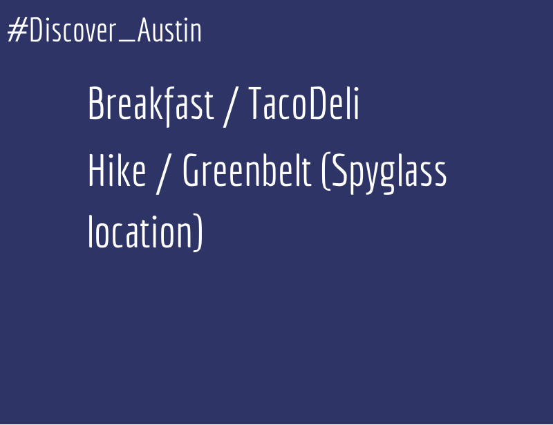
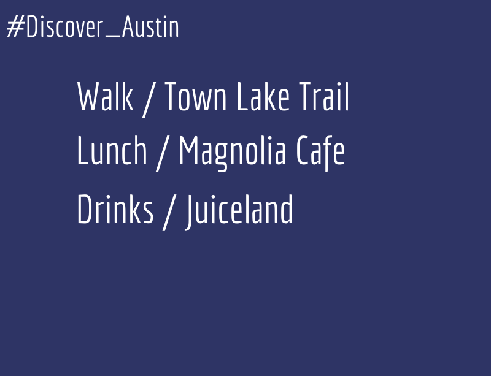

Catch a relaxing brunch at the cute eastside restaurant - Hillside Farmacy; then hike it off on a 30 minute hike to Sculpture Falls on the Barton Creek Greenbelt (from Loop 360 entrance)!
Plan #2
Grab some delicious breakfast tacos (favorite: Jess Special) from TacoDeli. Let your food digest some and take a stroll through the Greenbelt (right across from Tacodeli)!

Plan #3
Love the food at this popular food trailer in the Rainey Street District. It's BYOB too! They are soon going to brick and mortar. Grab a drink at any of the bars on Rainey Street afterwards!
Plan #4
Love this quaint Vietnamese restaurant. They have great pho! Check out the famous Welcome to Austin mural afterwards, then catch a movie in the park, brought to you by the Long Center and Alamo Drafthouse!
Plan #5
Enjoy lunch outside on this spacious deck at the Oasis, then venture off to try out the Lake Travis Zipline. Follow it up with wood-fired grilled pizza and wine at the old Lakeway standby - Hill Country Pasta House.
Plan #6
Taverna is always hoppin' at brunch. Stroll through the Second Street afterwards, then watch a movie at the small Violet Crown Theatre!
Plan #7
Spiderhouse has great coffee and drinks! It's always good people watching too. Afterwards, stop by Buffalo Exchange to shop for great second-hand clothing items and then play a little disc golf in Shoal Creek!
Plan #8
The new Whole Foods Domain just opened and it is awesome. Tons of food and drink options to choose from. Follow up with some golf at Top Golf then reverse HH at Kona Grill in the Domain!
Plan #9
Stand Up Paddle boarding (SUP) is a fun activity to do on town lake. Eating tacos at torchy's afterwards is a must.
Plan #10
Aussie's is a great place to play sand volleyball! Afterwards, head to Trio in the Four Seasons. They have a great happy hour and it's walking distance to the Congress bridge where you can watch the millions of bats fly out from under the bridge at night.
Plan #11
Hopdoddy is one of the best places in town to get a burger. They also have a killer milkshake. Don't worry about the long line you will see. You can get drinks while you wait :) Shop on South Congress afterwards.
Plan #12
The Driskill Hotel on sixth street is a famous hotel that is apparently haunted too. It's a must to check out for drinks and dinner. Catch a comedy show at Esther's Follies afterwards.
Plan #13
Bike the Veloway in South Austin, then afterwards stop by the Lady Bird Wildflower Center. It's beautiful! Hungry from your bike ride? Galaxy Cafe isn't too far away.
Plan #14
Head out to Driftwood to visit the famous barbecue joint- The Salt Lick. While you're out there, check out their winery, as well as the others nearby.
Plan #15
Dart Bowl is an awesome bowling alley. They are even having a pajama themed night soon (what!?). Afterwards, shop in the Triangle and grab a bite at the Flying Saucer.
Plan #16
Take a dip in the famous (and cold) Barton Springs Pool. Then head on over to Barton Springs road to fuel up at the various restaurants (plenty to choose from)!
Plan #17
Check out the donation based yoga studio - Black Swan Yoga (they also have online classes)! Grab a bite to eat at a food truck (fav - Peached Tortilla), then watch a movie at Alamo Drafthouse.
Plan #18
Hike up the hills to the 360 Bridge. Check out that amazing view! Then head to Maudie's on 360 for a Tex-Mex filled lunch. Mozart's is another great place with a view, and good coffee!
Plan #19
Pack your picnic items and head to Zilker Park on a beautiful day! Across the street is the beautiful Umlauf Sculpture Gardens. Top it off with a bottle of wine at House Wine down the street!
Plan #20
Music is happening everywhere, all the time in Austin. It's called the Live Music Capital of The World for a reason!
Plan #21
The City Wide Garage Sale is a great event to check out at the Palmer Events Center. You can find many hidden vintage treasures! Afterwards, walk to Paggi House for brunch, then play pitch and putt golf across the street!
Plan #22
24 Diner is you guessed it - a 24 Hour Diner. They have great "chef-inspired" comfort food. Milkshakes are awesome too. Stop by the Baylor Street Art Wall afterwards. It's a great place to snap some Instagram photos!
Plan #23
Homeslice pizza is one of the most popular pizza joints in town. A great place to stop before beer and baseball.
Plan #24
Check out the East Side! Several cool things happening over there. Cenote is a great place for coffee, love the country feel of White Horse (two steppin'!), and Blue Dahlia for a quaint dinner.
Plan #25
Apothecary is a great place for brunch or lunch! Afterwards, shop all the vintage stores along Burnet Road. Fonda San Miguel is close by and they have an amazing happy hour (try the Tower)!
Plan #26
Chicken Shit Bingo is fun to do at Ginny's Little Longhorn Saloon. Grab a bite before or after at the cute Hyde Park Bar and Grill tucked away in the historic Hyde Park district.
Plan #27
Several of the West Sixth Street bars have good happy hours - check out the popsicle martinis at Key Bar and the great deals at 219 West.
Plan #28
Rent a kayak and head to Lady Bird Lake and enjoy the city view. Stop by Auditorium Shores for a break, then fuel up at Frank brunch (they have bacon in their bloody mary's)!
Plan #29
Head on over to Mt. Bonnel and check out that iconic view! Afterwards stop by Ramen Tatsu-Ya and fuel up on delicious ramen before the comedy show!
Plan #30
Get out your dancin' shoes and head to the famous Broken Spoke! Dance away to burn off the ice cream you'll eat later!
Plan #31
Houndstooth on Congress is a great place for coffee. While you're on Congress, stop by MakerSquare, then head to the Capital for a tour!
Plan #32
Eat breakfast at the famous Juan in a Million! Great place where you can get a lot of food, for not much money. If you feel like getting in a swimsuit afterwards, head to Deep Eddy Pool, or just go play pool at Deep Eddy Cabaret.
Plan #33
Road Trip! There are so many things to do outside of Austin that are still close by. Take advantage of that!
Plan #34
Check out this cute coffee shop in East Austin, then head to South Congress to enjoy the shopping from vendors during First Thursday (happens First Thursday of every month)!
Plan #35
The Whole Foods Flagship is full of food and drink options to choose from. Whether you want pizza, sushi, tacos or a salad -they have you covered. Watch a show a Paramount Theatre afterwards!
Plan #36
Head southwest to the Hill Country Galleria and do a little shopping. While you're out there, stop by the beautiful Hamilton Pool for a swim!
Plan #37
Franklin BBQ has some of the best barbecue in Austin. Be sure to bring a chair, because you will be waiting for a while. Head on up to Round Rock to catch a baseball game!
Plan #38
Austin has several great farmer's markets! If you're at the Barton Creek farmer's market, stop by Gourdough's Public House afterwards for gourmet donuts.
Plan #39
Moonshine has an amazing brunch! Get there early or plan on waiting around for a while. Afterwards head to the nearest Bike Share checkout and explore downtown on 2 wheels!
Plan #40
Jester King Brewery offers brewery tours that are fun. While you're in that direction - you should stop by the iconic Cathedral of Junk.
Plan #41
Play a little golf at one of Austin's municipal golf course - Lion's, then head to Alamo Drafthouse for drinks, dinner and a fun quote-a-long movie!
Plan #42
Hike along the greenbelt then check out Whip In - they have great food, live music sometimes, and lots of craft beers on tap!
Plan #43
Put on your walkin' shoes and head to Lady Bird Lake Trail (Town Lake Trail), then fuel up at Magnolia Cafe and Juiceland afterwards (both close by)!

Plan #44
There are several cool bars on South Lamar, do a little bar hop (But use a designated driver)!
Plan #45
More gems in the Hyde Park neighborhood - Love Asti, a smaller Italian restaurant with great food! Afterwards walk across the street to Dolce Vita for Espresso and Gelato!
Plan #46
Shop along The Drag by UT campus, then head to the UT Tower for a tour!